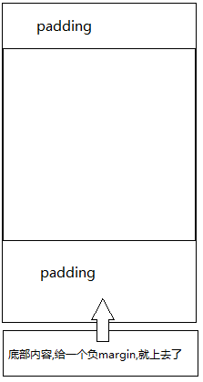
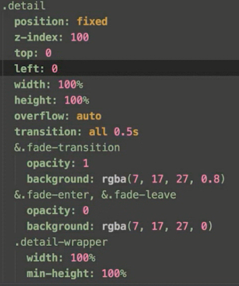
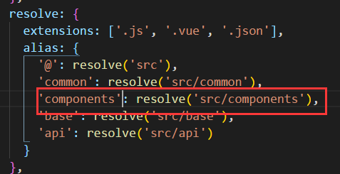

| 制作图标字体 | https://icomoon.io/ | ||
| 模糊效果 | filter: blur(6px); | ||
| css sticky footer | 原理:负margin |  | |
| vue-cli中 文件夹bulid/webpack.base.conf.js |
文件中 |
||
| 如何将4.2约等于成4.5 | 4.2乘以2向下取整再除以2 | Math.floor(this.score*2)/2 | |
| border-bottom+负padding可以划线 | 垂直居中的水平线 | ||
| css兼容性代码插件 | postcss | http://caniuse.com | |
| div的自定义动画 |
1.标签中加入transition="fade" 2.css中添加.fade-enter,.fade-leave和fade-transition 3.在加入transition="fade"的标签中添加css样式:transition |
 | |
| cnmp | 淘宝cdn镜像 | ||
| 创建package.json包 | npm init | ||
| cnpm vue--save-dev | 安装后会在package.json中添加dependencies | 加上-dev只会安装到开发版本中去 | |
| v-model | 双向数据绑定 | ||
| 标签中不允许再使用{{text}}这样的写法 | 要使用 v-bind:src="text"或者:src="text" | ||
| v-for | 1.0: <li v-for="item in items"><a>{{$index}}</a></li> 可取到索引值 | 2.0: <li v-for="(item,index) in items"> index为索引值 | |
| filter | a|b a表示一个值,b表示过滤器 | v-on:click 或者@click | 点击事件 可以写方法,也可以写表达式例如:checkall=true,并且接受三元表达式 |
| v-bind:class 或:class | Vue.set(item,"checked",true)监听全局变量 this.$set 监听局部变量 | ||
| 子组件触发父组件方法 |
|
||
| getBoundingClientRect用于获取某个元素相对于视窗的位置集合 | |||
| padding-top 100% | padding的高度会自动计算与width一致 | ||
| npm bulid/bulid.js | 用于编译打包项目 | 执行项目下的bulid/bulid.js文件 | |
|
该插件可以把.vue文件中的css代码单独提取出来编译成文件 | ||
|
编译项目时cmd的提示语句和转圈圈的小图标 | ||
| vendor hash.js | 引用的第三方库 | ||
| 总结: | ES6+ESlint,组件化,模块化,vue router,vue resource, | ||
| props双向绑定方法 |
vue 父组件向子组件可以传值,但是子组件改变父组件的值会报错:Avoid mutating a prop directly since the value will be overwritten whenever the parent...... 方法就是解耦:1.当父组件传入值时,子组件用props接住,然后在子组件data中创建另一个值,使其等于父组件传来的值, 2.父组件中绑定方法,例如on-result-change子组件中的值变化时传递该值给父组件this.$emit('on-result-change', this.onlyText); 3.父组件创建该方法并接住值:onResultChange(val) { this.onlyContent = val; },把值改到当初传入的变量中 |
||
| this.$emit() | 实验发现该方法只能传递到父元素,不能传递到祖先元素 | ||
| vux总是报 _vm.$t is not a function的错误 |
先安装 vue-i18n 在main.js中import vuei18n from 'vue-i18n' 再把你的vue组件页面中的$t全删掉，问题解决 |
||
| 新建项目注意添加 |
1.fastclick, 2.babel-polyfill, 3.stylus, 4.stylus-loader 5.webpack.base.conf.js添加'components': resolve('src/components'),  |
||